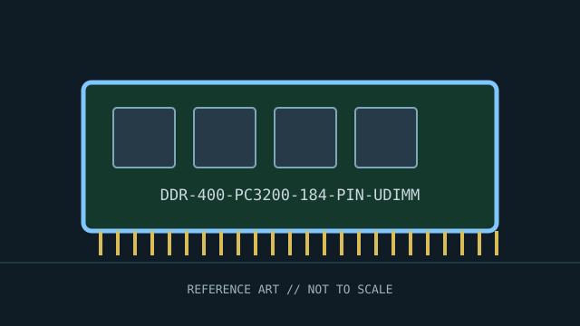

[ INDIVIDUAL COMPONENT // MEMORY / RAM ]
DDR-400 PC3200 184-pin UDIMM
DDR SDRAM unbuffered desktop DIMM standard. This record identifies a distinct product or standards-defined module class; specifications not verified for this exact identity are deliberately left open.

IDENTITY: DDR-400 PC3200 184-pin UDIMM is cataloged as ddr sdram unbuffered desktop dimm standard. Standards entries describe a module class; named manufacturer entries describe one SKU. Do not treat them as interchangeable records.
Recorded specifications
| Catalog identity | DDR-400 PC3200 184-pin UDIMM |
|---|---|
| Record type | DDR SDRAM unbuffered desktop DIMM standard |
| Verified specifications | 184-pin desktop DIMM; DDR-400 transfers at 400 MT/s per pin; PC3200 is the nominal 3.2 GB/s peak bandwidth class for a 64-bit channel. JEDEC DDR voltage class is 2.5 V; precise CAS timings are module-specific. |
| Compatibility | Requires a DDR SDRAM-capable socket and memory controller. DDR and SDR DIMMs are keyed/electrically incompatible. Confirm board support for the module density and maximum per-slot capacity. |
| Unverified/variable details | Only values supported by the cited standard or manufacturer source are stated. Confirm exact part number/revision, SPD, ranks, timings, and voltage on the specimen when not specified above. |
Platform compatibility and service
- Requires a DDR SDRAM-capable socket and memory controller. DDR and SDR DIMMs are keyed/electrically incompatible. Confirm board support for the module density and maximum per-slot capacity.
- Before installation, record the full label, manufacturer, part number, revision/date code, contact condition, chip markings, and SPD contents where present.
- Use ESD precautions, handle the module by its edges, and never force it into a slot with different keying. Power down and follow the host’s service manual.
- For server/ECC modules, confirm CPU support, buffering type, channel population, supported ranks/densities, and firmware behavior; physical fit is not proof of ECC operation.
Archival and service notes
This entry describes the JEDEC-era module/rate class, not a particular branded stick. Do not infer rank, capacity, latency, ECC, or buffered status from PC3200 alone. Photograph both sides before cleaning; retain the host manual, SPD dump, test host, BIOS revision, and memory-test result with the catalog record.
Sources & further reading
- JEDEC — JESD79 DDR SDRAM standard familyStandards-body index for DDR SDRAM device and module specifications.
- Kingston — Memory technology referenceManufacturer reference for generations, speed labels, and compatibility.
Manufacturer source identifies the named SKU where provided; standards pages describe a generation or module class. A source-family page may not capture every revision. Check the precise specimen and platform service documentation.